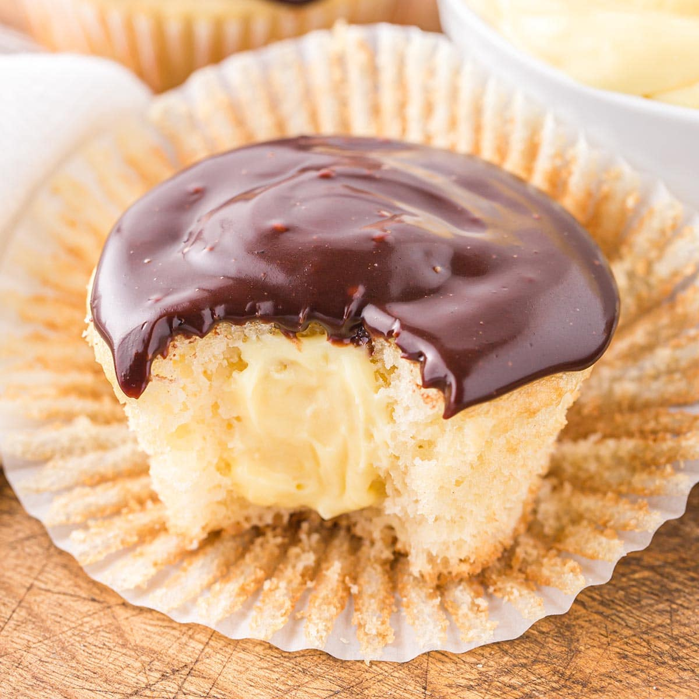

These Boston Cream Pie Cupcakes are to die for! Moist vanilla cake, pastry cream filling and a beautiful chocolate ganache topping make this one tasty cupcake you’ll definitely want to sink your teeth into.
Prepare the pastry cream: Whisk together egg yolks, 1/4 cup sugar, 1/4 teaspoon salt, and pinch of nutmeg until combined. Add in 2 tablespoons of flour and mix until thoroughly incorporated.
Place 1 cup half-and-half in a medium saucepan over medium-low heat until just beginning to simmer, about 5 minutes, then remove from heat.
While whisking constantly, carefully and slowly pour hot half-and-half into egg yolk mixture a little at a time, whisking until it is all thoroughly incorporated.
Pour mixture back into the saucepan and place over medium-low heat, whisking constantly, until mixture has thickened, 2 to 3 minutes.
Remove from heat and add in 1 tablespoon butter; mix until thoroughly melted and incorporated.
Add in remaining 1 tablespoon butter and 1 1/2 teaspoons vanilla, and mix until thoroughly combined.
Place a fine mesh strainer over a mixing bowl. Pour pastry cream into the strainer and press through using a spatula to remove any lumps.
Cover with plastic wrap, making sure the wrap is in contact with the surface of the pastry cream. Refrigerate until completely chilled, 1 to 2 hours.
Place 1/3 cup cold heavy whipping cream into a bowl, and whip until stiff peaks form. Remove pastry cream from the refrigerator; remove plastic wrap.
Fold whipped cream into pastry cream until thoroughly combined. Cover and keep chilled until ready to use.
Preheat the oven to 325 degrees F (162 degrees C). Line 2 regular 12-cup cupcake pans with liners.
In a large bowl, sift together 1 1/2 cups flour, baking powder, and 3/4 teaspoon salt. Set aside.
Bring 3/4 cup half-and-half, 6 tablespoons butter, 1 1/2 teaspoons vanilla, and 1/4 teaspoon almond extract to a simmer in a small saucepan over medium low-heat. Turn off heat; keep warm.
Beat egg whites, whole eggs, and 1 1/2 cups sugar until light and airy, 5 to 7 minutes. With mixer running on low speed, slowly pour heated half-and-half mixture into the egg mixture until thoroughly combined.
Add in half of the dry ingredients; mix until just combined. Add in remaining dry ingredients; mix until just combined, with very few lumps. Batter will be thin.Working somewhat quickly, divide batter evenly between the 2 prepared cupcake pans, filling each cupcake liner just over half full.
Bake cupcakes in the preheated oven until golden and a toothpick inserted into the center of the cupcake comes out clean, 25 to 30 minutes.
Allow cupcakes to cool in pan for 5 minutes, then remove to a wire rack to cool completely.
Once cupcakes are cool, use a cupcake corer or paring knife to remove the center of the cupcakes (making sure not to go all the way through the sides or bottom).
Save the top of the cored pieces to use as a 'cap' for the filling, cutting away any extra cupcake as necessary.
Fill a piping bag with the pastry cream. Pipe filling into each cored cupcake. Place cupcake 'cap' over the top of the filling.
To make frosting, place chocolate chips, corn syrup, and 3/4 cup heavy cream into a microwave safe bowl. Microwave mixture at 50% power in 30 second intervals, until melted and combined, 1 1/2 to 2 minutes.
Cool chocolate until thickened to a spreadable consistency, 5 to 10 minutes. Frost each filled cupcake with the chocolate frosting.
Keep cupcakes stored in the refrigerator until ready to eat. Bring back to room temperature before serving.
The chocolate frosting will harden up substantially in the fridge, and is best served at room temperature.